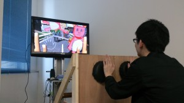

お越しいただいた2572名の方
本当にありがとうございました！
アミューあつぎ 展示企画
厚木市産業振興課主催「アミューあつぎ グランドオープンイベント」
神奈川工科大学「未来のゲームセンター」
日時：2014年4月26-27日（土-日）10:00-17:00
場所：〒243-0018 厚木市中町2-12-15「アミューあつぎ」グランドオープンイベン(6F604)
内容： 厚木市産業振興課 様から、白井研究室の「MangaGenerator」の展示のお話をいただきました。展示スペースとして、8.5m × 8.7mの一室を提供していただけることになりました。しかし、先生曰く「せっかくのアミューのグランドオープン、白井研究室の研究展示だけではもてあましてしまうよ。なによりいい経験になりますよ！」
そこで、白井研究室の技術の他にもゲームクリエイター特訓の成果物の中から、厳選されたいくつかを展示したいと考えました。実際に皆さんが制作したものを、改善し、一般のお客さんにも体験してもらえるチャンスです。展示やゲーム開発現場の勉強にもなるうえ、一般のお客さんの意見・評価等を聞くことができます。結果、改善、体験者写真などの更なる課題や成果が見つけられる良い機会だと思います。私自身、現場の仕事，プロデューサー職の修行中の身でもありますので、至らないこともあるかもしれませんが、よろしくご参加いただければ幸いです。
ゲームクリエイター特訓については「神奈川工科大学 情報メディア学科ブログ」より詳細を確認できます。

■■作品紹介
作品No.01「ManagaGenerator」
■作品概要
「MangaGenerator(瞬刊少年マルマル)」は、 ポーズをとるだけで誰でもマンガの世界に入ることができる新感覚・体験型エンタテイメントシステムです。体験者が制限時間内にコマのストーリーに合わせて自由にポーズを取ることで、 コンピュータがポーズに合ったマンガ効果を付加しマンガが作成されていきます。 完成したマンガは体験終了時に印刷され、 世界に一つだけのオリジナルマンガがゲットできます！
作品No.02「FamilinkTV」
■作品概要
「FamilinkTV」は白井研究室で研究されている多重化映像技術の最新デモです。リビングルームの家庭用テレビで多重化映像を実現します。リビングルームの同じソファで異なるコンテンツ、例えばテレビ番組やゲーム、異なるチャンネルなど、人によって違う映像を観る事ができるようになります。

{kind=link}
作品No.03「アオモリズム」
■作品概要
「ホッカイドウが攻めてきたど！」
アオモリとホッカイドウがねぶたのリズムで殴り合う、地形リズムアクション「アオモリズム」。地形同士が殴り合うという斬新な発想。２ボタンで出来るシンプルなリズムゲームだが、東京ゲームショウ２０１３のアカデミックブースで話題を独占。ネット上のメディアでも話題となりました。
広大な「試される大地ホッカイドウ」から飛来するジャガイモ、サケ等のホッカイドウの特産物をアオモリが下北半島と、津軽半島ではじき返す！ホッカイドウも本気で殴りに来るぞ。音楽ゲームやリズムゲームが苦手な人でも楽しめます。後ろにいる人のほうが楽しめるかも。厚木にもアオモリズム旋風が巻き起こるか。乞うご期待！

作品No.04「はげピッ!ピッ!」
■作品概要
「はげピッ!ピッ!」はバーコード頭のおじさんをレジでピッ！とやることで爽快感を生み出す会計スキャンアクションゲームです。店員となったユーザーが画面に出された指定の金額に沿っておじさんの頭をピッ！とすることで、おじさんたちはスキャンされて、合計金額が加算されます。おじさんをスキャンしてクリアしたお題の数(=お客の人数)がユーザーの成績となります！
{kind=link}
作品No.05「ワットラットラッシュ」
■作品概要
「ワットラットラッシュ」は「節電」をテーマに開発した新感覚ゲームです。このゲームではネズミの背中に跨がり、ネズミの尻尾を投げつけて部屋中の電源プラグを抜いていき節電していきます。体験者はネズミ型の椅子に跨がり、Oculus Riftというゴーグル状のディスプレイを装着することで、ゲームに入り込んだような気分を味わいながらプレイしていただけます。ネズミの尻尾を模したコントローラーを電源プラグに向けて振るという直感的な操作で更にゲームの世界に入り込めます。「見て」「振って」正にゲームの中に入り込んだような新感覚を是非味わってください！
{kind=link}
作品No.06「Let’s SPANKING!!」
■作品概要
「Let’s SPANKING!!」はありそうでなかった全身を使った体験型ゲームです。専用の洋服と手袋を身につけるだけで準備は完了！後は身体の部位をタッチするだけの簡単操作です。パンパンと拍手をしてみたり、腰に手を当ててフリフリしてみたり、どのように操作するかはあなた次第！自然と身体が動いて楽しくなってきちゃいます！
{kind=link}
作品No.07「リキシトール」
■作品概要
「リキシトール」は、ツッパリを放つことで、身の回りのどんな大きな障害物でも吹っ飛ばすことができる、ツッパリ体感アクションゲームです。体験者はDUIと呼ばれる筐体に向かって、迫り来る障害物にタイミング良くツッパリをしていきます。体験者の強烈なツッパリで吹っ飛ぶ有象無象の障害物は、今までにない”笑い”と、そして”爽快感”を生み出します。

{kind=link}
以上、7作品から神奈川工科大学「未来のゲームセンター」は展開されます。
神奈川工科大学 情報学部 情報メディア学科
白井研究室 4年 アミューあつぎ展示企画担当 小川耕作
■オープニングイベントのお問い合わせ：厚木市 産業振興課 成田 046-225-2831 （平日8:30-17:15）
■本件に関する問い合わせ： 神奈川工科大学 情報学部 情報メディア学科 白井研究室
〒243-0292 神奈川県厚木市下荻野1030 担当：小川耕作（学部４年）
Tel：046-291-3201 fax：046-291-3319（学科共通） E-mail： amyu@shirai.la
ピンバック: 未来のゲームセンター前日 | Ogawa's blog